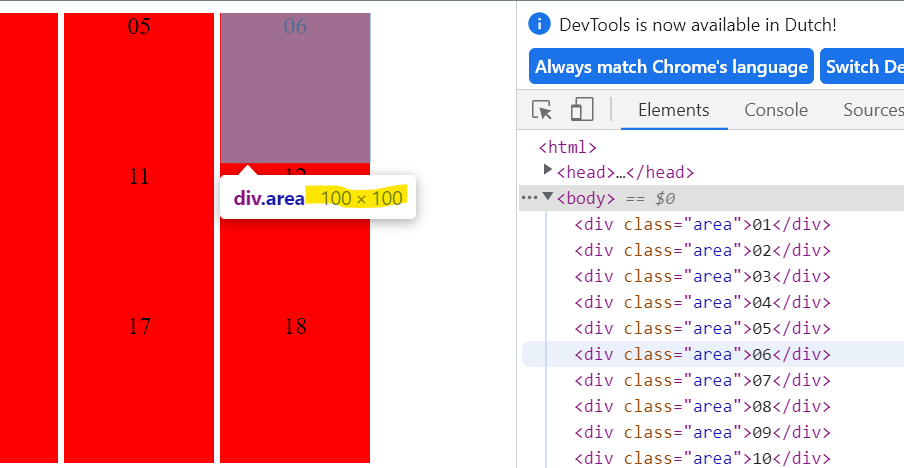

Opdracht_1:
display: block; geeft blockjes in één column
display: inline; geeft de div elemententen in een lijn terug. Maar de width en height hebben geen effect meer.(ook de padding en marging)
display: inline-block; geeft de div elemententen in een lijn terug maar de width en height werken in dit geval
Voor welke waarden worden de opgegeven width en height genegeerd?
De width en height worden gegeven voor alle div elementen die class="area" hebben.
Voor welke waarden worden de elementen als woorden op een pagina gezet?
Met de property text-align worden de elementen als woorden opgezt.
De text-align property accepteert left, center, right, justify, en inherit als waarden.
In dit voorbeeld gebruiken we text-align: center; Dit toont de text in het midden van de div elementen